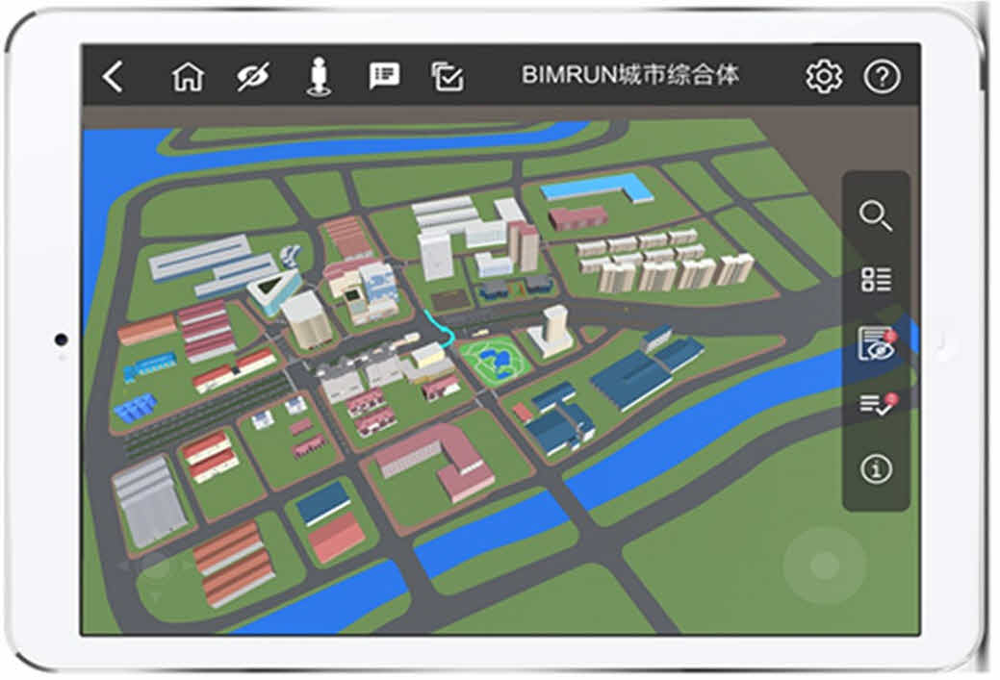
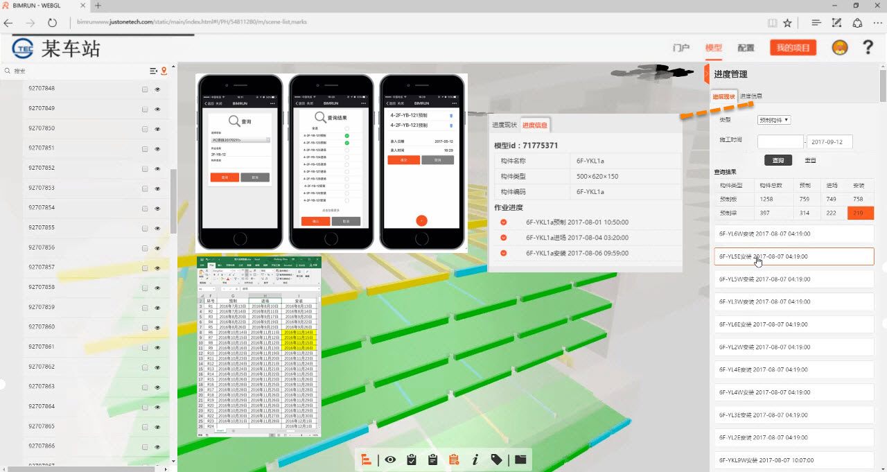

<ion-header>
  <ion-toolbar color="success">
    <ion-buttons slot="start">
      <ion-back-button defaultHref='/tabs/tab2' text='返回'></ion-back-button>
    </ion-buttons>
    <ion-title>slides</ion-title>
  </ion-toolbar>
</ion-header>

<ion-content>
  <!-- 1、Slides轮播图组件 -->
  <!-- lonic4.x中的轮播图组件是基于swiper插件，所以配置slides的属性需要在swiper的api中找 -->
  <!-- 2.基本用法，通过[option]绑定参数 -->
  <ion-slides mode="ios" pager="ios" scrollbar="ios" [options]='slideOptions' #slide1
    (ionSlideTouchEnd)='slideDidChange()'>
    <ion-slide>
      
    </ion-slide>
    <ion-slide>
      
    </ion-slide>
    <ion-slide>
      
    </ion-slide>
  </ion-slides>
  <!-- 3.ion-slide的高级用法，调用方法实现轮播 -->
  <!-- 1.获取slide对象，定义名称#slide -->
  <!-- 2.引入ViewChild获取slide对象 -->
  <!-- import { Component, OnInit, ViewChild } from '@angular/core'; -->
  <!-- @ViewChild('myslide') slide; -->
  <!-- 3.触发事件调用slide的方法-->
  <ion-slides mode="ios" pager="ios" scrollbar="ios" #myslide>
    <ion-slide>
      
    </ion-slide>
    <ion-slide>
      
    </ion-slide>
    <ion-slide>
      
    </ion-slide>
  </ion-slides>
  <ion-button (click)="slideNext()" expand="block" shape="round">
    点击按钮跳转到下一页
  </ion-button>
  <ion-button (click)="slidePrev()" expand="block" shape="round">
    点击按钮跳转到上一页
  </ion-button>
</ion-content>